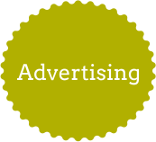
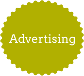

"Icon: Women In Design"
Digital, 2023

 


For this project, I was really thinking about designers who had inspired and influenced my own work, and I would be remiss not to focus my attention to one of the greatest designers of the twentieth century. At a young age, Westwood was introduced to the unique task of defining the aesthetic look of an entire new subculture (punk) when she costumed and designed for The Sex Pistols. As someone who’s really enjoyed and modelled parts of my life within this subculture, it felt like due time that I paid my homage to Westwood’s career.

In 2012, Westwood described her design ideas around punk as "seeing if one could put a spoke in the system". I decided to continue that idea onward in my own design work. I used two genderless heads with punk-style haircuts meant to represent the idea that punk can be anyone or anything that people want it to be. The two figures in the background are kissing since Westwood did a lot of work destigmatizing queer public displays of affection in public. In addition, I added the already existing Vivienne Westwood logo to give the design cohesion with her current brand. I placed her pre-existing logo at the bottom of the design to give the viewer a sense of movement within the updated logo- eyes are first drawn to the bright colors of the hairstyles, and then attention is drawn downwards. This leaves the last impression of the viewer as being the Westwood orb, leaving them thinking about the brand as a whole.